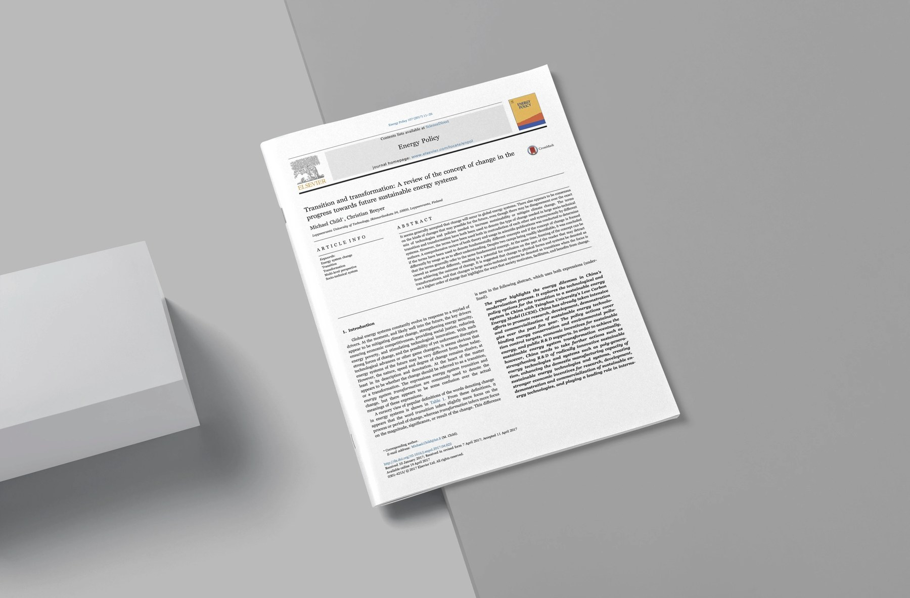
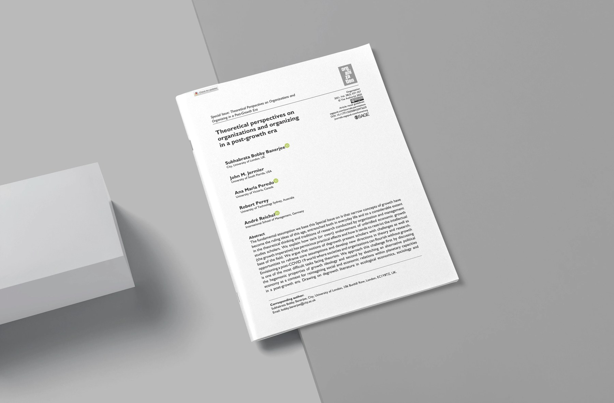

Degrowth, energy transitions, systems thinking
4 essays

A review of Child and Breyer on what we mean by transition and by transformation in the move to sustainable energy systems, and how research networks shape which word we reach for.

Degrowth asks what happens when well being, care and ecological limits replace growth as the measure of a good economy, and what that asks of the people who design things.